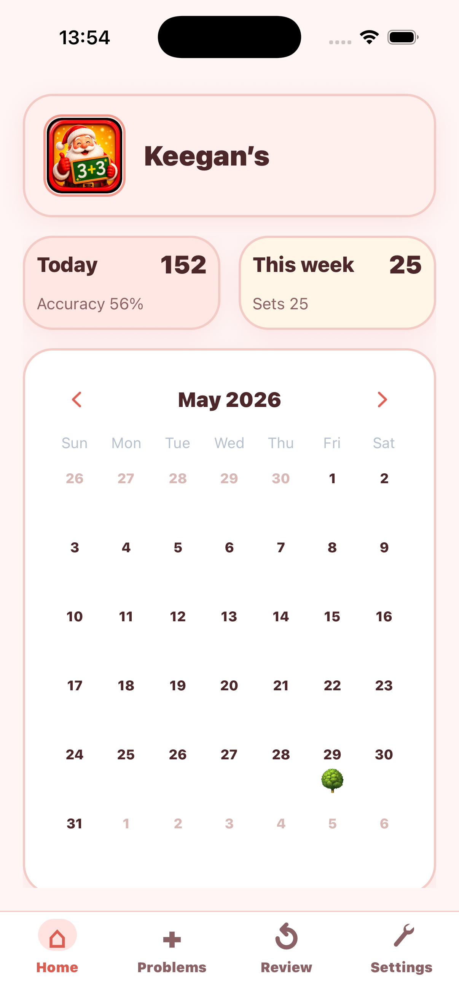
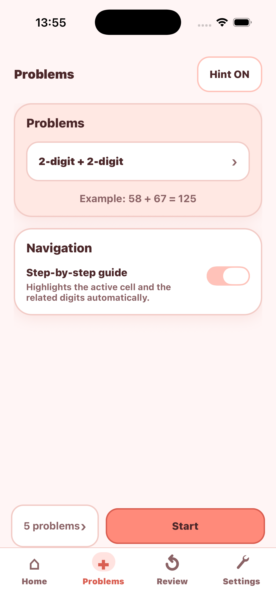
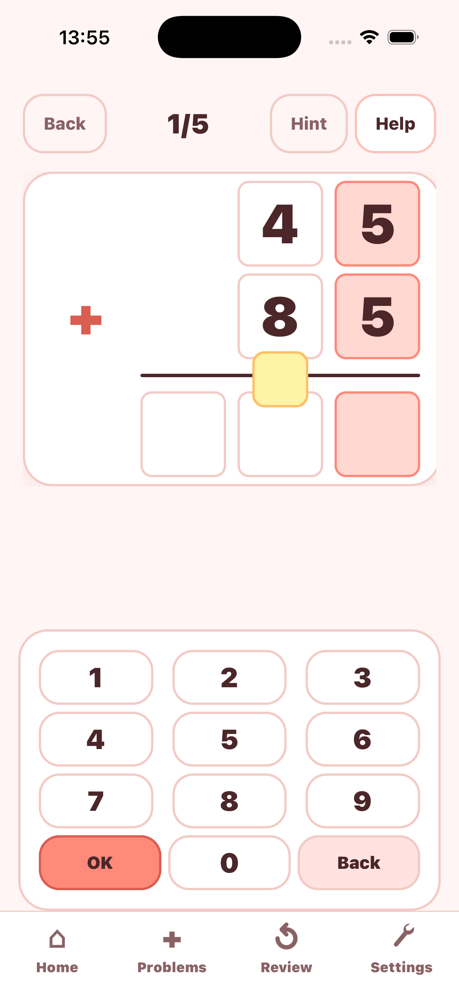
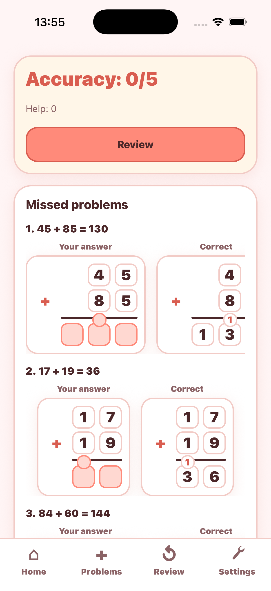

引き算の筆算をガイド
答えマス、繰り下がりの補助マス、上部の減算後マスをハイライトし、順番に進めます。
MyNass
MyNass は、引き算の筆算をマス目、繰り下がり、復習、プロフィールごとのローカル進捗で練習できる子ども向けアプリです。
 App Store 準備中
App Store 準備中
Learning flow
出題形式を選び、繰り下がりと答え入力を順番に進め、最後に完成した筆算を見直します。
答えマス、繰り下がりの補助マス、上部の減算後マスをハイライトし、順番に進めます。
借りてきた1、斜線、1引いた数字、答え入力を分けて練習できます。
全ての問題を復習画面に残し、間違えた問題は明確に表示します。
Screenshots
iPhoneリリース準備ビルドのスクリーンショットです。

プロフィール、カレンダー、最近の学習状況を確認できます。

引き算の出題形式を選び、短い練習セットを開始します。

繰り下がりの手順、現在のマス、テンキーを1つの画面で確認できます。

自分の回答と正しい筆算を並べて見直せます。

プロフィール、言語、端末内設定を管理できます。
MyNass のサポートとプライバシー情報はこちらから確認できます。
初回リリースでは学習データを端末内に保存し、アカウント登録は不要です。